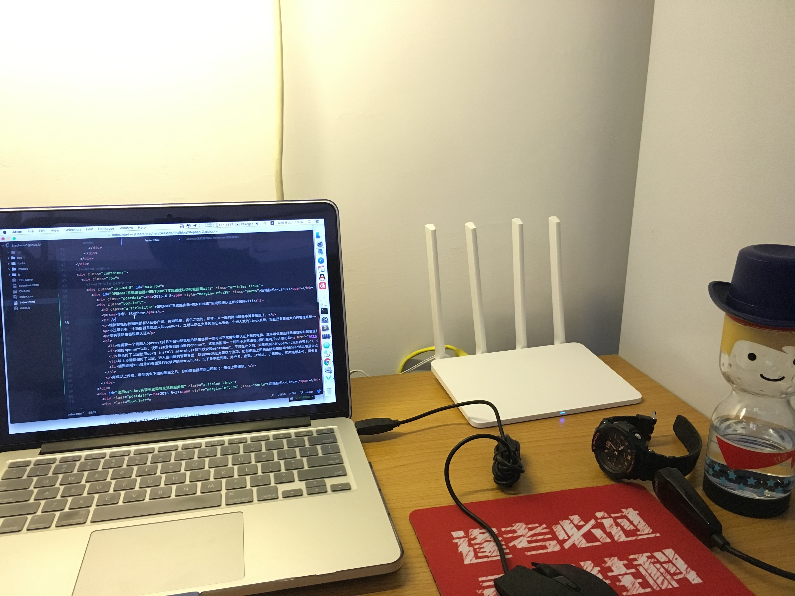
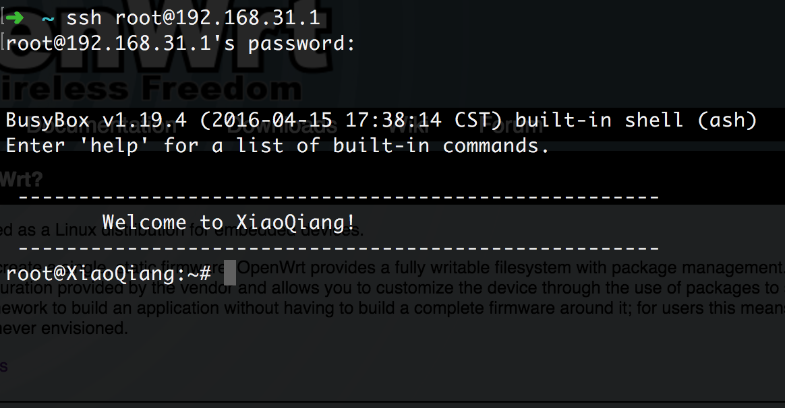
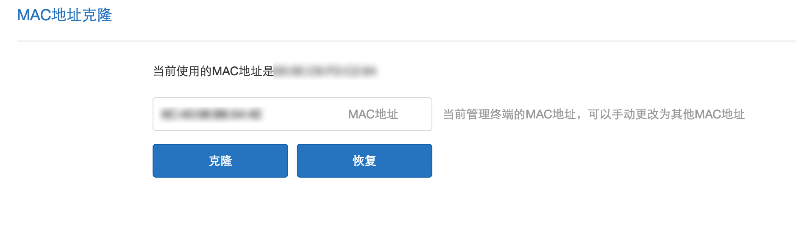
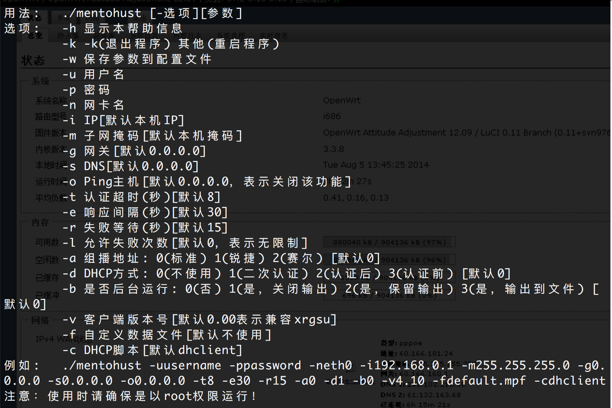
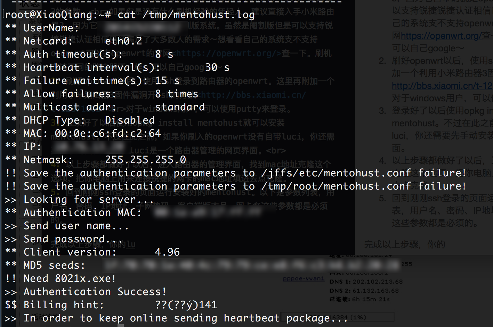
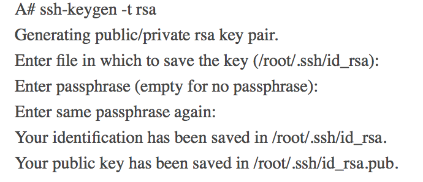
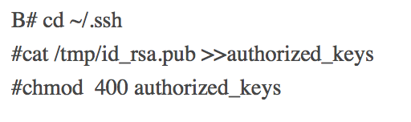
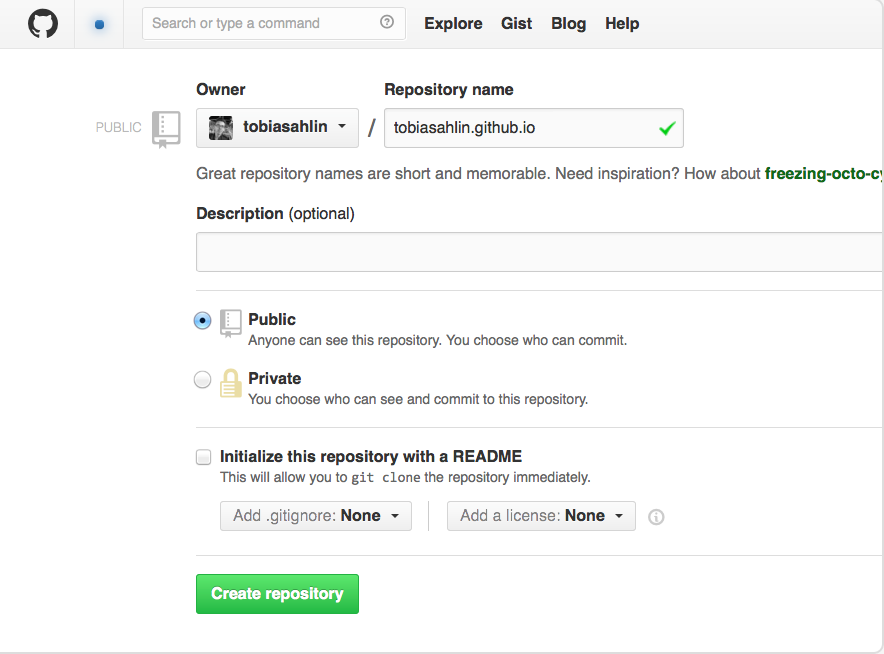
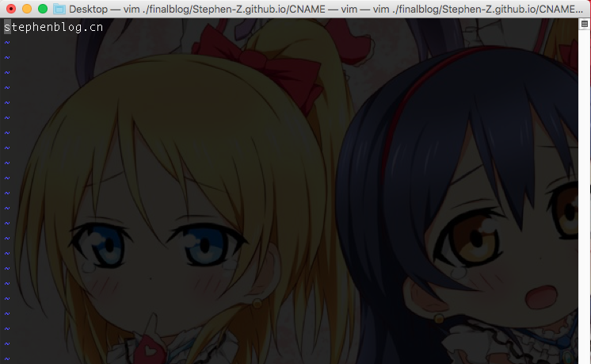
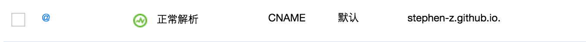

This is a Menu😄
2016-6-8后端技术>>Linux
OPENWRT系统路由器+MENTOHUST实现锐捷认证和校园网wifi
作者：Stephen

相信现在的校园网都有认证客户端，例如锐捷、赛尔之类的。这样一来一般的路由器基本算是报废了。
不过最近有一个路由器系统很火叫openwrt，之所以这么火是因为它本身是一个嵌入式的linux系统，而且还有着强大的包管理系统——opkg。所以只要你路由器性能够强劲，可以刷入openwrt，那几乎无所不能～
要实现路由器锐捷认证
- 你需要一个能刷入openwrt并且不会中途死机的路由器和一部可以正常用锐捷认证上网的电脑。意味着你在选择路由器的时候要注意路由器的处理器、闪存还有ROM这些参数。不过如果你动手能力很强，你还可以尝试硬改路由器，换一个大一点的flash和rom。下图是博主刚入手的邪教（小米）路由器3的参数。
如果你是没有什么刷机经验的年轻人，建议直接入手小米路由器3，因为它自带的就是openwrt阉割版系统。虽然是阉割版但是可以支持锐捷锐捷认证相信已经满足了大多数人的需求～想看看自己的系统支不支持openwrt可以去openwrt的官网https://openwrt.org/查一下。刷机方法不同的路由器不一样，可以自己google～ - 刷好openwrt以后，使用ssh登录到路由器的openwrt。这里再附加一个利用小米路由器3固件漏洞开ssh的方法http://bbs.xiaomi.cn/t-12871805
对于windows用户，可以使用putty来登录。 - 登录好了以后使用opkg install mentohust就可以安装mentohust。不过在此之前，如果你刷入的openwrt没有自带luci，你还需要先手动安装luci。luci是一个路由器管理的网页界面。

- 以上步骤都做好了以后，进入路由器的管理界面，找到mac地址克隆这个选项，把你电脑上用来连接锐捷的网卡的mac地址填进去点克隆。
- 回到刚刚ssh登录的页面运行安装好的mentohust。以下是参数列表，用户名、密码、IP地址、子网掩码、客户端版本号、网卡名这些参数都是必须的。
完成以上步骤，看到类似下图的画面之后，你的路由器应该已经起飞～祝你上网愉快。
2016-5-31后端技术>>Linux
使用ssh-key实现免密码登录远程服务器
作者：stephen chang
随着云服务器和vps的流行，越来越多人拥有自己的云服务器或者vps。那么记住密码就是一个比较会令人头疼的问题。所以博主特地在此教大家如何使用ssh－key进行免密码登录。
不如现在要从A主机登录到远程的B主机：
- 第一步是在A主机上面生成ssh－key的公钥和私钥。运行以下命令一直回车即可。
这条命了执行完之后会在~/.ssh目录下生成id_rsa和id_rsa.pub两个文件。

- 在B主机上配置authorized_keys文件。注意要设置好权限。 
完成好这两部之后就可以在A主机上自由登录B主机了，再不会被密码所扰。
2016-5-28前端技术>>Github
使用自定义域名访问github pages
作者：Stephen
github pages可以看成是一个免费的web服务器，对于服务器比较紧缺的人尤其是学生来说，这绝对是一个好东西。
不过由于很多人不喜欢github pages的二级域名，所以这里我教大家如何把自己的域名绑定github pages。
首先，要完成绑定需要3个步骤：
- 在github上创建一个新项目用来放网站。注意格式是：username.github.io。 
- 在项目根目录下创建一个名为CNAME的文件，里面写上自己的域名，注意不要有前缀之类的，就仅仅是域名就行了，这里还要注意一点，CNAME是没有后缀的而且名字必须全部大写。 
- 在自己的域名提供商那里添加一条cname记录指向github pages的地址。 
完成以上三个步骤以后用nslookup命令查看一下看看自己的域名cname记录生效了没有。如果看到cname记录已经指向了github pages的地址，就说明记录生效了，现在，可以用自己的域名去访问github pages了～
2016-5-27后端技术>>Linux
tmux使用手册
tmux是一个优秀的终端复用软件，类似GNU Screen，但来自于OpenBSD，采用BSD授权。使用它最直观的好处就是，通过一个终端登录远程主机并运行tmux后，在其中可以开启多个控制台而无需再“浪费”多余的终端来连接这台远程主机；当然其功能远不止于此，下面是关于tmux的使用手册
tmux #开启tmux
tmux ls #显示已有tmux列表（C-b s）
tmux attach-session -t 数字 #选择tmux
C-b c 创建一个新的窗口
C-b n 切换到下一个窗口
C-b p 切换到上一个窗口
C-b l 最后一个窗口,和上一个窗口的概念不一样哟,谁试谁知道
c-b w 通过上下键选择当前窗口中打开的会话
C-b 数字 直接跳到你按的数字所在的窗口
C-b & 退出当前窗口
C-b d 临时断开会话 断开以后,还可以连上的哟:) （退出lalal）
C-b " 分割出来一个窗口
C-b % 分割出来一个窗口
C-b o 在小窗口中切换
C-b (方向键)
C-b ! 关闭所有小窗口
C-b x 关闭当前光标处的小窗口
C-b t 钟表
C-b pageup/pagedo
2016-5-24后端技术>>Linux
Nginx编译安装
一、安装nginx时必须先安装相应的编译工具
yum -y install gcc gcc-c++ autoconf automake
yum -y install zlib zlib-devel openssl openssl-devel pcre-devel
建立nginx 组
groupadd -r nginx
useradd -s /sbin/nologin -g nginx -r nginx
id nginx
zlib:nginx提供gzip模块，需要zlib库支持
openssl:nginx提供ssl功能
pcre:支持地址重写rewrite功能
二、tar -zxvf nginx-1.2.8.tar.gz
三、cd nginx-1.2.8
四、./configure \
--prefix=/usr \
--sbin-path=/usr/sbin/nginx \
--conf-path=/etc/nginx/nginx.conf \
--error-log-path=/var/log/nginx/error.log \
--pid-path=/var/run/nginx/nginx.pid \
--user=nginx \
--group=nginx \
--with-http_ssl_module \
--with-http_flv_module \
--with-http_gzip_static_module \
--http-log-path=/var/log/nginx/access.log \
--http-client-body-temp-path=/var/tmp/nginx/client \
--http-proxy-temp-path=/var/tmp/nginx/proxy \
--http-fastcgi-temp-path=/var/tmp/nginx/fcgi \
--with-http_stub_status_module
五、make && make install
exp: Nginx编译安装 configure arguments: --prefix=/usr/local/nginx --sbin-path=/usr/sbin/nginx --conf-path=/etc/nginx/nginx.conf --error-log-path=/var/log/nginx/error.log --pid-path=/var/run/nginx/nginx.pid --user=nginx --group=nginx --with-http_ssl_module --with-http_flv_module --with-http_gzip_static_module --http-log-path=/var/log/nginx/access.log --http-client-body-temp-path=/var/tmp/nginx/client --http-proxy-temp-path=/var/tmp/nginx/proxy --http-fastcgi-temp-path=/var/tmp/nginx/fcgi --with-http_stub_status_module --with-http_sub_module --with-zlib=/root/Fromlocal/nginx/zlib-1.2.8 --with-openssl=/root/Fromlocal/nginx/openssl-1.0.1r
2016-5-23前端技术>>Javascript
Chart.js参数介绍
官网地址http://www.chartjs.orgchart.js是一个目前比较流行的一款开源的轻量的多样化的制图框架。想用好它的话不妨了解一下它的参数。
var lineChartData = {
labels : ["09/12","09/13","09/14","09/15","09/16","09/17","09/18"], //X轴 坐标
datasets : [
{
fillColor : "transparent", // 背景色
strokeColor : "#ef7c1f", // 线
pointColor : "#ef7c1f", // 点
pointStrokeColor : "#fff", // 点的包围圈
data : [120,140,110,130,150,170,160] // Y轴坐标
},
{
fillColor : "transparent",
strokeColor : "#3dc448",
pointColor : "#3dc448",
pointStrokeColor : "#fff",
data : [80,90,80,100,110,130,100]
}
]
}
var defaults = {
//Boolean - If we show the scale above the chart data
scaleOverlay : false,
//Boolean - If we want to override with a hard coded scale
scaleOverride : false,
//** Required if scaleOverride is true **
//Number - The number of steps in a hard coded scale
scaleSteps : null,
//Number - The value jump in the hard coded scale
scaleStepWidth : 20,
// Y 轴的起始值
scaleStartValue : null,
// Y/X轴的颜色
scaleLineColor : "rgba(0,0,0,.1)",
// X,Y轴的宽度
scaleLineWidth : 1,
// 刻度是否显示标签, 即Y轴上是否显示文字
scaleShowLabels : true,
// Y轴上的刻度,即文字
scaleLabel : "<%=value%>",
// 字体
scaleFontFamily : "'Arial'",
// 文字大小
scaleFontSize : 12,
// 文字样式
scaleFontStyle : "normal",
// 文字颜色
scaleFontColor : "#666",
// 是否显示网格
scaleShowGridLines : false,
// 网格颜色
scaleGridLineColor : "rgba(0,0,0,.05)",
// 网格宽度
scaleGridLineWidth : 2,
// 是否使用贝塞尔曲线? 即:线条是否弯曲
bezierCurve : false,
// 是否显示点数
pointDot : true,
// 圆点的大小
pointDotRadius : 8,
// 圆点的笔触宽度, 即:圆点外层白色大小
pointDotStrokeWidth : 2,
// 数据集行程
datasetStroke : true,
// 线条的宽度, 即:数据集
datasetStrokeWidth : 2,
// 是否填充数据集
datasetFill : false,
// 是否执行动画
animation : true,
// 动画的时间
animationSteps : 60,
// 动画的特效
animationEasing : "easeOutQuart",
// 动画完成时的执行函数
onAnimationComplete : null
}
var myLine = new Chart(document.getElementById("canvas").getContext("2d")).Line(lineChartData, defaults);
labels : ["09/12","09/13","09/14","09/15","09/16","09/17","09/18"], //X轴 坐标
datasets : [
{
fillColor : "transparent", // 背景色
strokeColor : "#ef7c1f", // 线
pointColor : "#ef7c1f", // 点
pointStrokeColor : "#fff", // 点的包围圈
data : [120,140,110,130,150,170,160] // Y轴坐标
},
{
fillColor : "transparent",
strokeColor : "#3dc448",
pointColor : "#3dc448",
pointStrokeColor : "#fff",
data : [80,90,80,100,110,130,100]
}
]
}
var defaults = {
//Boolean - If we show the scale above the chart data
scaleOverlay : false,
//Boolean - If we want to override with a hard coded scale
scaleOverride : false,
//** Required if scaleOverride is true **
//Number - The number of steps in a hard coded scale
scaleSteps : null,
//Number - The value jump in the hard coded scale
scaleStepWidth : 20,
// Y 轴的起始值
scaleStartValue : null,
// Y/X轴的颜色
scaleLineColor : "rgba(0,0,0,.1)",
// X,Y轴的宽度
scaleLineWidth : 1,
// 刻度是否显示标签, 即Y轴上是否显示文字
scaleShowLabels : true,
// Y轴上的刻度,即文字
scaleLabel : "<%=value%>",
// 字体
scaleFontFamily : "'Arial'",
// 文字大小
scaleFontSize : 12,
// 文字样式
scaleFontStyle : "normal",
// 文字颜色
scaleFontColor : "#666",
// 是否显示网格
scaleShowGridLines : false,
// 网格颜色
scaleGridLineColor : "rgba(0,0,0,.05)",
// 网格宽度
scaleGridLineWidth : 2,
// 是否使用贝塞尔曲线? 即:线条是否弯曲
bezierCurve : false,
// 是否显示点数
pointDot : true,
// 圆点的大小
pointDotRadius : 8,
// 圆点的笔触宽度, 即:圆点外层白色大小
pointDotStrokeWidth : 2,
// 数据集行程
datasetStroke : true,
// 线条的宽度, 即:数据集
datasetStrokeWidth : 2,
// 是否填充数据集
datasetFill : false,
// 是否执行动画
animation : true,
// 动画的时间
animationSteps : 60,
// 动画的特效
animationEasing : "easeOutQuart",
// 动画完成时的执行函数
onAnimationComplete : null
}
var myLine = new Chart(document.getElementById("canvas").getContext("2d")).Line(lineChartData, defaults);
后端技术
- Linux
前端技术
- Javascript
- Github